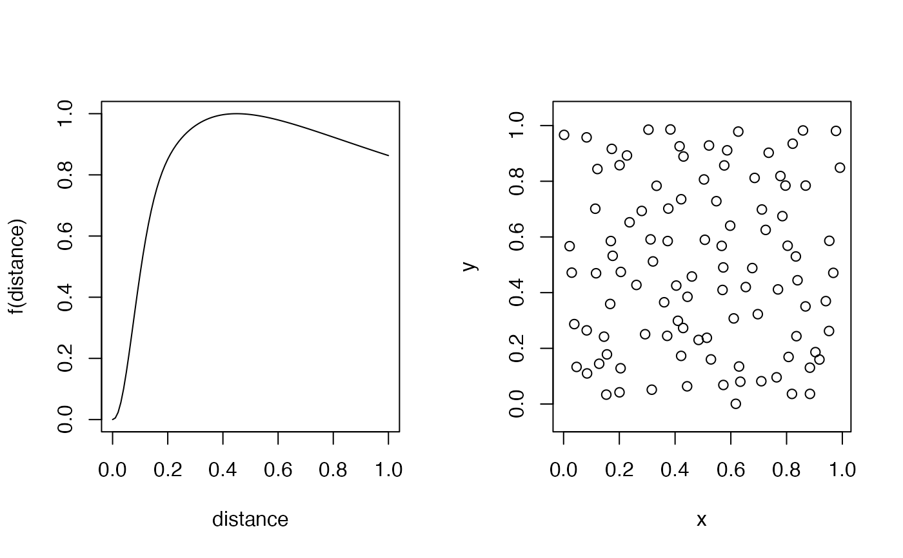
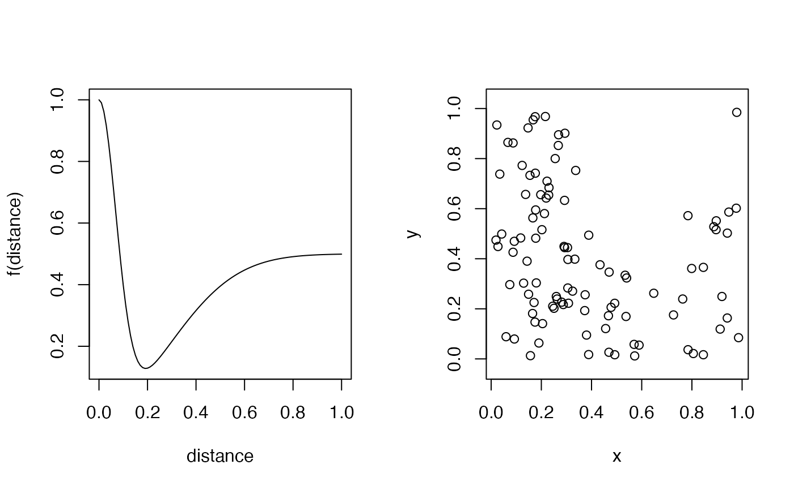
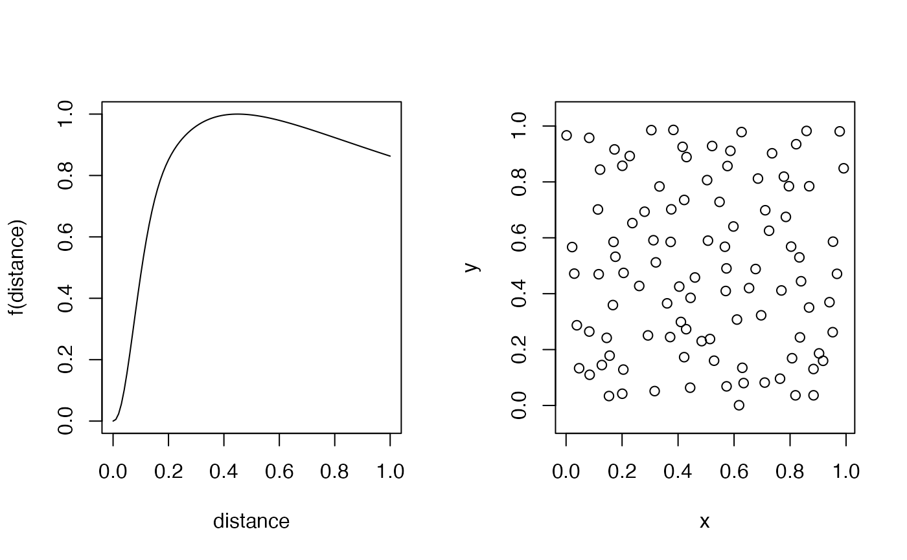
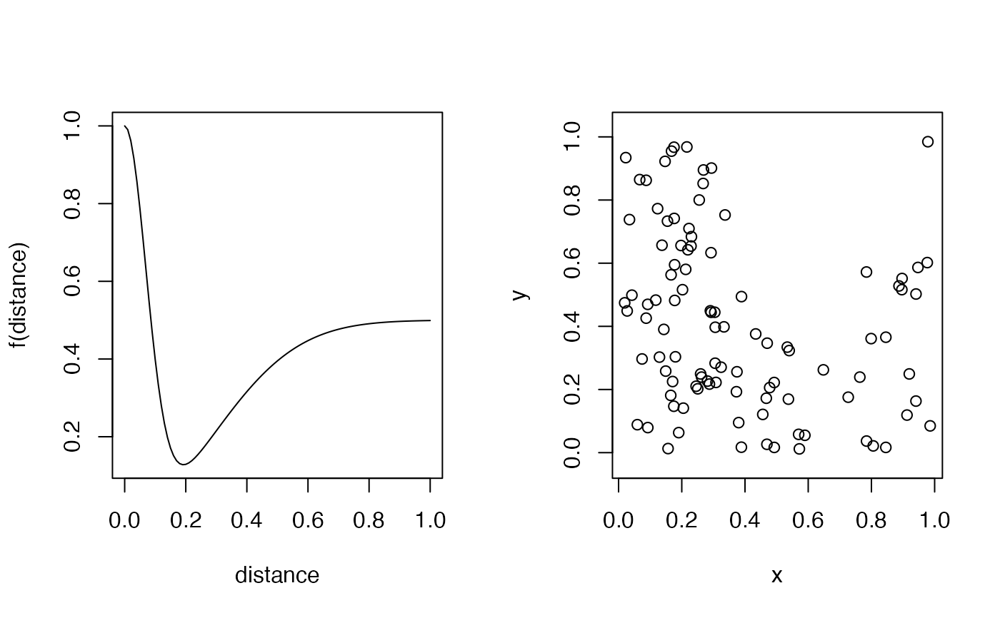

Spatial point process simulator
acceptreject.RdSpatial point process simulator based on accept/reject algorithm.
acceptreject(n, f = NULL, x0 = 0, x1 = 1, y0 = 0, y1 = 1,
m = 0, maxit = 100, fail = FALSE)Arguments
- n
number of points to generate.
- f
a function returning probability (value between 0 and 1) given distance as the first and only argument. The function generates spatially uniform Poisson point process (complete spatial randomness) when
NULL.- x0, x1, y0, y1
x and y ranges (bounding box).
- m
margin width for avoiding edge effects.
- maxit
maximum number of iterations per point to try if no acceptance happens.
- fail
logical, what to do when there is a problem.
TRUEgives error, the defaultFALSEgives only a warning.
Value
A matrix with n rows and 2 columns for x and y coordinates.
Examples
## complete spatial randomness
plot(acceptreject(100), asp=1)
 ## more systematic
distance <- seq(0,1,0.01)
f <- function(d)
(1-exp(-d^2/0.1^2) + dlnorm(d, 0.2)/dlnorm(exp(0.2-1),0.2)) / 2
op <- par(mfrow = c(1, 2))
plot(distance, f(distance), type="l")
plot(acceptreject(100, f, m=1), asp=1)

par(op)
## more clustered
f <- function(d)
exp(-d^2/0.1^2) + 0.5*(1-exp(-d^2/0.4^2))
op <- par(mfrow = c(1, 2))
plot(distance, f(distance), type="l")
plot(acceptreject(100, f, m=1), asp=1)

par(op)
## more systematic
distance <- seq(0,1,0.01)
f <- function(d)
(1-exp(-d^2/0.1^2) + dlnorm(d, 0.2)/dlnorm(exp(0.2-1),0.2)) / 2
op <- par(mfrow = c(1, 2))
plot(distance, f(distance), type="l")
plot(acceptreject(100, f, m=1), asp=1)

par(op)
## more clustered
f <- function(d)
exp(-d^2/0.1^2) + 0.5*(1-exp(-d^2/0.4^2))
op <- par(mfrow = c(1, 2))
plot(distance, f(distance), type="l")
plot(acceptreject(100, f, m=1), asp=1)

par(op)